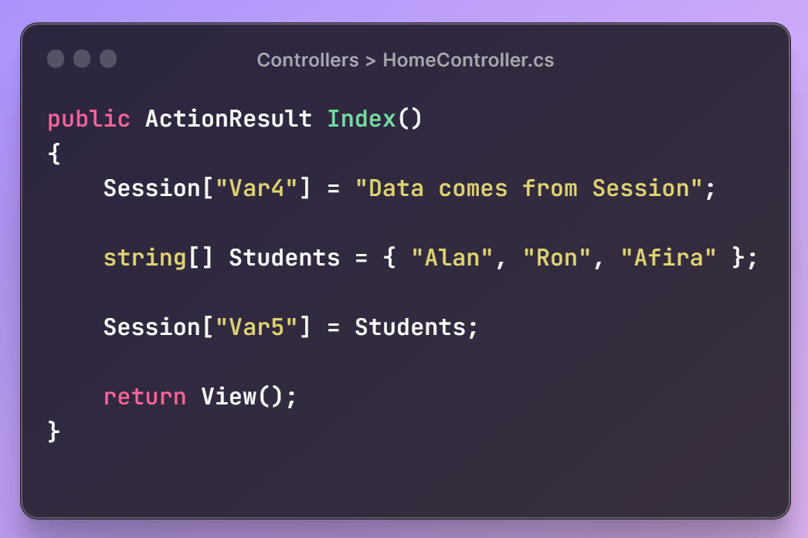
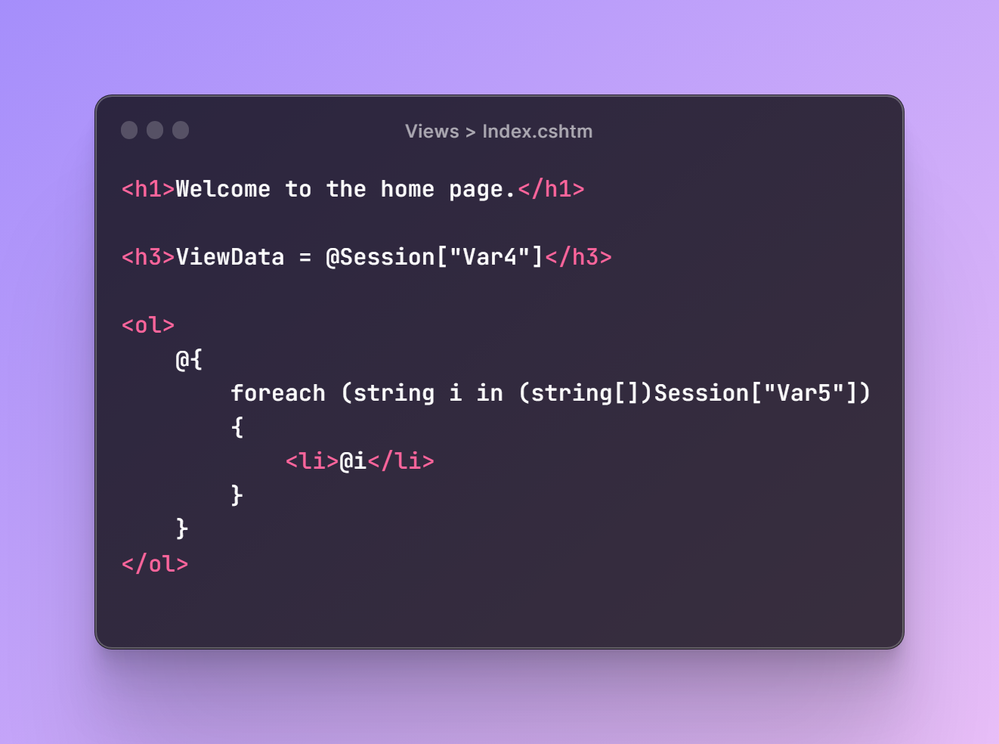
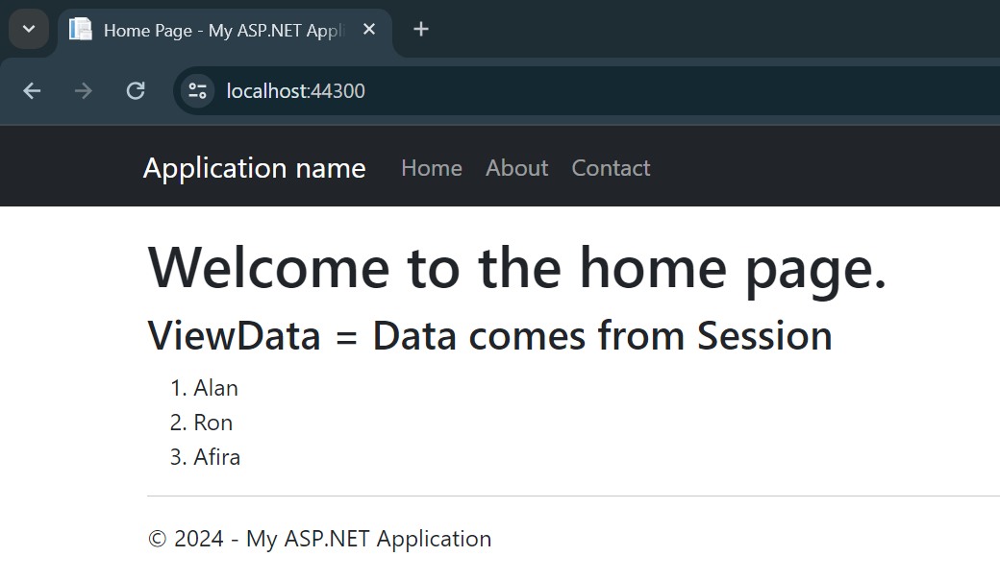
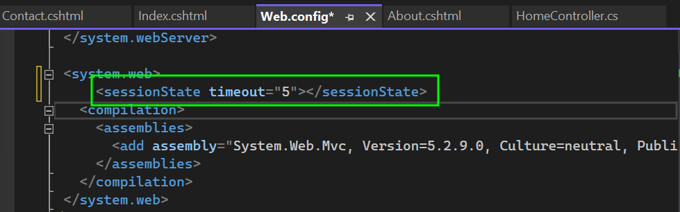

Some of the key features of Session in ASP.NET:
- Session is a property of controller class whose type is HttpSessionStateBase.
- Session is also used to pass data within the ASP.NET MVC application and unlike TempData.
- It persist for its expiration time (default time is 20 minutes but it can be increased).
- Session is valid for all requests, not for a single redirect.
- It also requires type casting for getting data and check for null value to avoid error.
- Session has a performance drawback because it slows down the application that's why it is not recommended to always use Session, Session can be used according to the situation.
The following steps shows the basic application of a session in ASP.NET.
1. Start by creating a new web application project in visual studio and select the MVC pattern.
2. In controllers, in home controller, create an ActionResult method of Index and initialize a session variable as shown in the screenshot below.
3. Then create view of the Index method and add the following code to see the output on the web browser.
And then finally build and run the project.
A session lasts for 20 minutes by default. But you can always increase it. To increase the session time, go to the Web.Config file and add the following piece of code.
Here, the session will be available for 5 min and then it will be destroyed.
Happy coding!